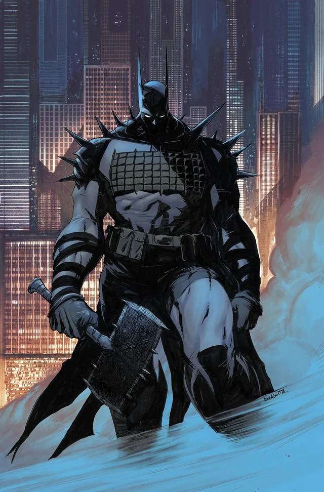

Aliados

Alfred

Mulher-Gato
Adversarios

Coringa

Bane
O que acontece quando você retira tudo de um homem... exceto sua determinação?

No Universo Absolute, Bruce Wayne não possui a fortuna, os recursos ou o treinamento tradicional de sua versão clássica.
Ainda assim, ele se torna o Batman através de pura determinação, inteligência e resistência, representando uma versão mais crua, violenta e realista do herói.
Neste universo, Bruce Wayne cresce em uma família de classe trabalhadora em Gotham, longe da riqueza de sua contraparte tradicional. Filho de Martha Wayne, assistente social, e Thomas Wayne, professor, ele vive em Crime Alley e desenvolve laços com pessoas que, em outra realidade, seriam seus inimigos.
Durante uma excursão escolar ao zoológico de Gotham, um ataque armado muda sua vida para sempre. Seu pai se sacrifica para salvar as crianças, morrendo diante de Bruce.
Preso entre morcegos após o ataque, Bruce vivencia um momento marcante que moldaria sua identidade futura.
Após a morte do pai, Bruce canaliza sua dor em crescimento pessoal. Ele treina com amigos, aprende sobre o submundo do crime e desenvolve habilidades físicas e intelectuais.
Sem recursos financeiros, ele constrói sua jornada através de esforço próprio, estudando engenharia, política e comportamento criminal.
Inicialmente adotando métodos brutais e baseados no medo, Bruce percebe que apenas combater criminosos individuais não resolve o problema.
Ele então redefine sua missão: atacar as estruturas de poder e corrupção de Gotham. Com equipamentos improvisados e bases espalhadas pela cidade, nasce o Batman — uma figura construída não por privilégio, mas por resistência e obsessão.
Alfred
Mulher-Gato
Coringa
Bane